Lesson 5: text-basics
Lesson 5: Text Basics
/en/word/saving-and-sharing-documents/content/
Introduction
If you're new to Microsoft Word, you'll need to learn thebasics of typing, editing, and organizing text. Basic tasks include the ability to add, delete, and move text in your document, as well as how to cut, copy, and paste.
Watch the video below to learn the basics of working with text in Word.
[](../../../../../www.youtube.com/embed/vmEzxQfVj5c.webm)
Using the insertion point to add text
The insertion point is the blinking vertical line in your document. It indicates where you can enter text on the page. You can use the insertion point in a variety of ways.
- Blank document: When a new blank document opens, the insertion point will appear in the top-left corner of the page. If you want, you can begin typing from this location.
 * Adding spaces: Press the spacebar to add spaces after a word or in between text.
* Adding spaces: Press the spacebar to add spaces after a word or in between text.
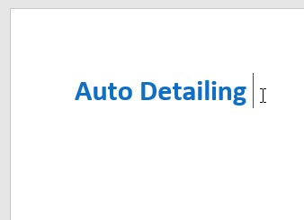
* New paragraph line: Press Enter on your keyboard to move the insertion point to the next paragraph line.* Manual placement: Once you begin typing, you can use the mouse to move the insertion point to a specific place in your document. Simply click the location in the text where you want to place it.
- Arrow keys: You can also use the arrow keys on your keyboard to move the insertion point. The left and right arrow keys will movebetween adjacent characters on the same line, while the up and down arrows will movebetween paragraph lines. You can also press Ctrl+Left or Ctrl+Right to quickly move between entire words.
In a new blank document, you can double-click the mouse to move the insertion point elsewhere on the page.
Selecting text
Before you can move or format text, you'll need to select it. To do this, click and drag your mouse over the text, then release the mouse. A highlighted box will appear over the selected text.
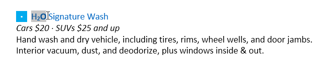
When you select text or images in Word, a hover toolbar with command shortcuts will appear. If the toolbar does not appear at first, try hovering the mouse over the selection.

To select multiple lines of text:
- Move the mouse pointer to the left of any line so it becomes a right slanted arrow.
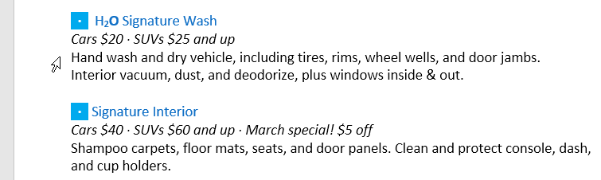
2. Click the mouse. The line will be selected.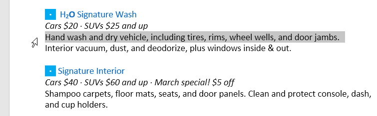
3. To select multiple lines, click and drag the mouse up or down.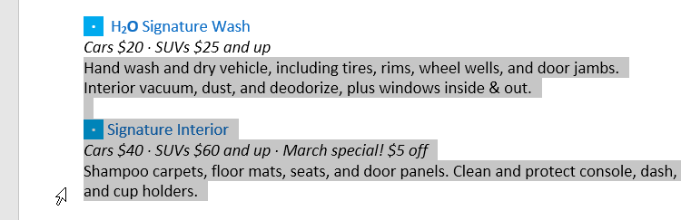
4. To select all of the text in your document, choose the Select command on the Home tab, then click Select All. You can also press Ctrl+A on your keyboard.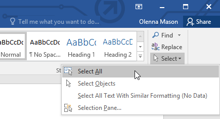
Other shortcuts include double-clicking to select a word and triple-clicking to select an entire sentence or paragraph.
To delete text:
There are several ways to delete, or remove, text:
- To delete text to the left of the insertion point, press the Backspace key on your keyboard.
- To delete text to the right of the insertion point, press the Delete key on your keyboard.
- Select the text you want to remove, then press the Delete key.
If you select text and start typing, the selected text will automatically be deleted and replaced with the new text.
Copying and moving text
Word allows you to copy text that's already in your document and paste it in other places, which can save you a lot of time and effort. If you want to move text around in your document, you can cut and paste or drag and drop.
To copy and paste text:
- Select the text you want to copy.
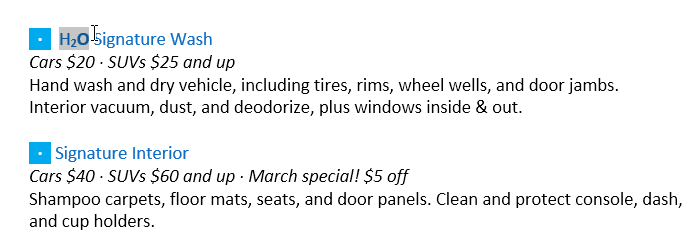
2. Click the Copy command on the Home tab. You can also press Ctrl+C on your keyboard.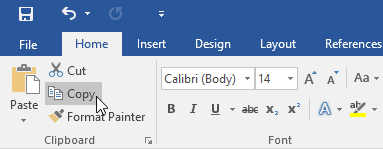
3. Place the insertion point where you want the text to appear.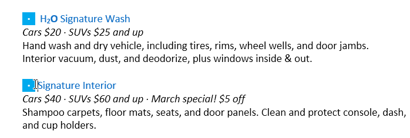
4. Click the Paste command on the Home tab. You can also press Ctrl+V on your keyboard.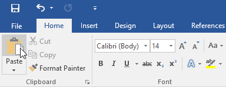
5. The text will appear.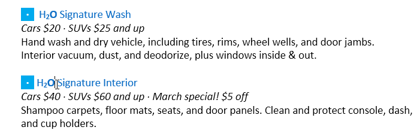
To cut and paste text:
- Select the text you want to cut.
2. Click the Cut command on the Home tab. You can also press Ctrl+X on your keyboard.
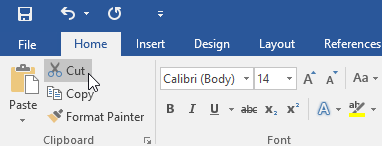
3. Place your insertion point where you want the text to appear.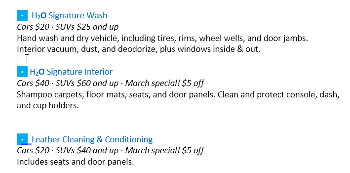
4. Click the Paste command on the Home tab. You can also press Ctrl+V on your keyboard.5. The text will appear.
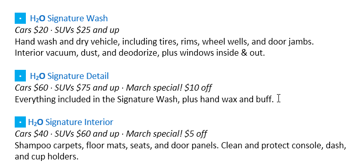
You can also cut, copy, and paste by right-clicking your document and choosing the desired action from the drop-down menu. When you use this method to paste, you can choose from three options that determine how the text will be formatted: Keep Source Formatting, Merge Formatting, and Keep Text Only. You can hover the mouse over each icon to see what it will look like before you select it.
To drag and drop text:
- Select the text you want to move.
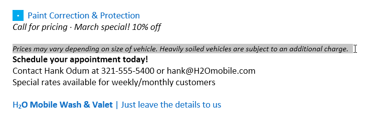
2. Click and drag the text to the location where you want it to appear. A small rectangle will appear below the arrow to indicate that you are moving text.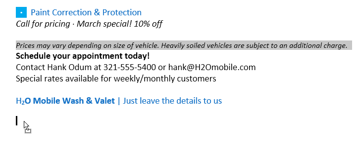
3. Release the mouse, and the text will appear.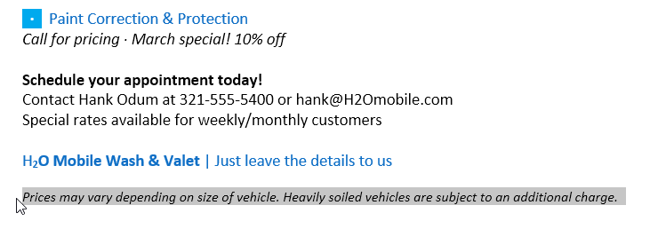
If text does not appear in the exact location you want, you can press the Enter key on your keyboard to move the text to a new line.
Undo and Redo
Let's say you're working on a document and accidentally delete some text. Fortunately, you won't have to retype everything you just deleted! Word allows you to undo your most recent action when you make a mistake like this.
To do this, locate and select the Undo command on the Quick Access Toolbar. You can also press Ctrl+Z on your keyboard. You can continue using this command to undo multiple changes in a row.
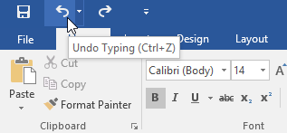
By contrast, the Redo command allows you to reverse the last undo. You can also access this command by pressing Ctrl+Y on your keyboard.
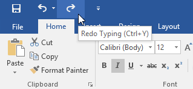
Symbols
If you need to insert an unusual character that's not on your keyboard, such as a copyright (©)or trademark (™) symbol, you can usually find it with the Symbol command.
To insert a symbol:
- Place the insertion point where you want the symbol to appear.
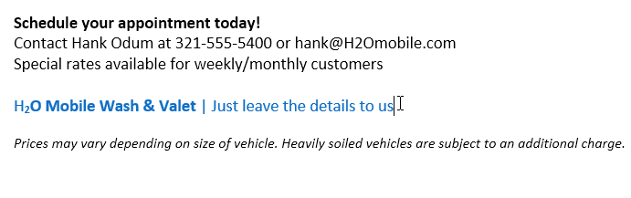
2. Click the Insert tab.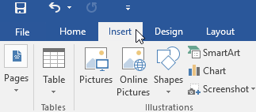
3. Locate and select the Symbol command, then choose the desired symbol from the drop-down menu. If you don't see the one you want, select More Symbols...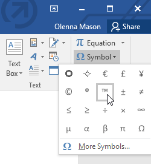
4. The symbol will appear in the document.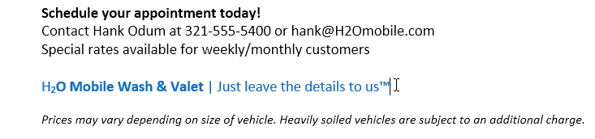
Challenge!
- Open our practice document.
- Scroll to page 2.
- Place the insertion point at the top of the document and type Now Introducing...
- Use your arrow keys to move the insertion point to the Signature Detail Plan's price and change it to $99.99/mo.
- At the bottom of the document, use drag and drop to move Just leave the details to us to the end of the last line.
- At the end of the line you just moved, insert the trademark symbol. If you cannot find the trademark symbol, insert a different symbol of your choice.
- When you're finished, your document should look something like this:
/en/word/formatting-text/content/